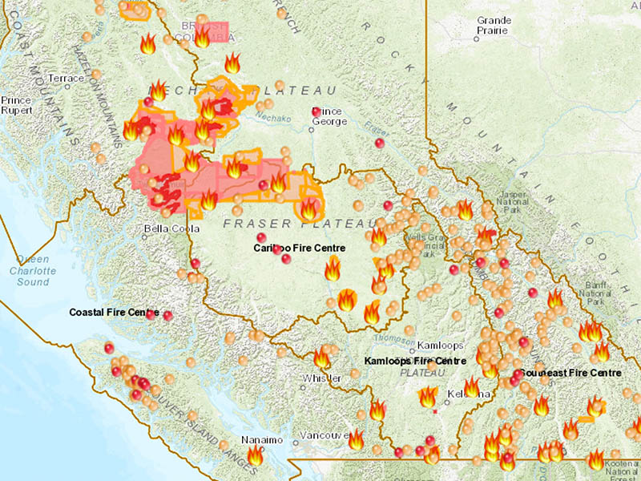
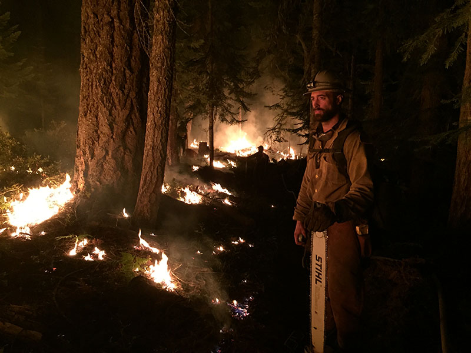

Megafire
Understanding the New Normal
for Wildfires in the Pacific Northwest
It’s a whimsical riddle that couldn’t possibly have a real answer:
“What’s 150 feet tall, sounds like a freight train, leaps across the Columbia River, and creates its own weather patterns?”
But as Pacific Northwest residents know well, wildfires are becoming a bigger, more threatening part of our lives.
“The earth is getting hotter. With climate change come more droughts, earlier springs, and hotter, drier summers. Maybe not every year, but they will happen with more frequency. For the Pacific Northwest, any combination of those things is almost a guarantee of a long and intense fire season,” says Michael Medler, an associate professor of Environmental Studies at Western whose primary research area is pyrogeography—the geography of fire.
Residents of the Evergreen State need only look at the span of the last six summers to see a set of the deadliest, most active fire seasons in state history.

Photo by WWU alumna and wildlands firefighter Caitlin Chinn
“These fires, with the abundant fuels propelling them, can literally just explode; they grow and expand in ways typical fires do not.”
In 2014 the Carlton Complex fire roared through the Methow Valley and became the largest wildfire in Washington history at more than 256,000 acres; that ignominious title lasted less than a year.
In 2015, an extraordinarily hot, dry spring set the stage for more than 300 wildfires across the state before June was even over, and fires kept raging throughout the summer. The season culminated in August with the next newly crowned largest wildfire in state history, the Okanogan Complex fire—complexes consist of many different blazes—that claimed the lives of three wildland firefighters near Twisp and consumed more than 300,000 acres.
At the same time, the Chelan Complex fire just to the south burned 100,000 acres. As these two monster fires were tearing through the east slopes of the Cascades, the Pacific Northwest was so strapped for firefighters that President Obama sought help from Australia and New Zealand. Nationally the news wasn’t any better, with the fire season claiming, for the first time, more than 1 million acres in a single summer.
The 2017 fire season was kindled by record heat and dryness on both sides of the state but was perhaps best-known for “Smokezilla,” the smoke plume from the record number of fires in British Columbia that choked the Puget Sound. In Washington, Diamond Creek in Okanagan County was consumed by a “megafire,”a relatively new term for any blaze that tops 100,000 acres. And Skamania County’s Eagle Creek fire was ignited Sept. 2 when a massive blaze in Oregon jumped the Columbia River and kept burning until after-Thanksgiving rains.

British Columbia's 2018 fire season was the worst in the province's history.
The 2018 season started hot and dry, and fires in the state caused Governor Jay Inslee to declare a state of emergency by the end of July; the news was even worse for our neighbors to the north, as the province set a new record with more than 3.2 million acres burned. The Tweedsmuir Complex fire alone was more than 750,000 acres in size, more than doubling Washington’s record setter from 2015.
Last summer’s cool, wet summer provided a brief respite to the smoke for most Washingtonians, but the trend is clear.
“The numbers don’t lie,” says Medler. “Even the way we describe wildland fires has changed: We used to talk about them in acres, now we use square miles. A huge fire back in the ‘80s was 50,000 acres, now it takes 300,000 or more to move the needle.”
What has Changed?
Wildland fires are not new, and are a part of nature’s renewal process; they burn down unproductive grasslands and replace them with lush new growth. Lodgepole pines actually need fires—very hot fires—for their cones to open and spread their seeds to start a new generation of trees. Many types of trees are genetically prepared to resist fire: While they might lose branches and part of their outer layers of bark, they can bounce back after a fire and survive.
What has changed is the frequency, duration, and intensity of the fires, as our region’s recent fire history shows. The warmer climate is a part of it, Medler says—but playing just as big a role is how the nation responds to and prepares for fire seasons.
For example, federal wildfire policy is focused on suppression, scrambling the fire crews when fires reach a certain size. But he says spending our resources on extinguishing smaller blazes may actually put communities at greater risk of massive fires.
Periodic fires burn at a cooler temperature and scorch away the dead wood, underbrush and other fuels in the forests, Medler says. Such fires might typically kill only about 20 percent of the trees in the burn area.
“But when we race to extinguish fires, the fuel is never exhausted, and it just builds up to the point that when a big fire comes— a huge fire maybe once every 50 years instead of smaller ones once every five or 10—the fire burns with such heat that perhaps more like 80 percent of the trees are lost, a term called ‘complete canopy mortality,’ ” he says. “And these fires, with the abundant fuels propelling them, can literally just explode; they grow and expand in ways typical fires do not.”
When a Fire Comes to Town

Photo by WWU alumna and wildlands firefighter Caitlin Chinn
As a pyrogeographer, Medler focuses his research on areas where high fire hazards overlap with development; in states like California especially, the line between wildland firefighting and urban firefighting is becoming increasingly blurred.
These areas, called the wildland-urban interface, are often seen on newscasts as whole housing developments reduced to ash and rubble. When wildland-urban interface zones burn, firefighting strategy often takes a backseat to political reality.
“In the forest, you can easily understand sacrificing 200 acres of woods to save 5,000 more, but no crew can burn a fire line through 20 homes in a development in order to save 500 other homes. They just can’t do it,” he says.
“In the forest, you can easily understand sacrificing 200 acres of woods to save 5,000 more, but no crew can burn a fire line through 20 homes in a development in order to save 500 other homes. They just can’t do it”
Medler says that crews currently working on thinning projects would be put to better use clearing quarter-mile buffer zones around high-risk communities such as those in the eastern foothills of the Cascades.
“Cutting those zones would be a fraction of the work of thinning 400 million-plus acres, and the work would make these communities more resilient and better able to withstand the kinds of tragedies we see in California almost every summer,’ he says.
In the wake of the disastrous 2015 fire season, Medler was called to testify before a special meeting of the U.S. Senate Energy and Natural Resources Committee led by Sens. Maria Cantwell of Washington and John Barasso of Wyoming.
He talked to them about suppression as a practice, about thinning, about buffer zones and fire mitigation strategies, and about the system known as “fire borrowing”—using next year’s mitigation and preparation funds to fight this year’s fires—and how the system was untenable.
Before he studied wildland fires, Medler battled them. He fought fires in Washington, Oregon and the infamous Yellowstone fires in 1988, where almost 800,000 acres burned. He was once “burned over,” his head down in a scratch-dug hole as he blacked out, only to wake as a member of his crew was dragging him feet-first to safety.
Medler described his work on the crew as an exhilarating combination of exhaustion, euphoria, and camaraderie.
“When you are on a fire crew that has been dispatched to a fire, it is all you are going to be doing. You don’t make a lot of decisions. It is like the military,” he says. “You eat, sleep, and work within a few yards of everyone on your crew for weeks at a time. You learn to recognize each of them at a hundred yards in the dark just by their walk. You know who is going to say which joke before they say it. The result of months of this can be a little disconcerting when the season ends.”
The fires themselves also proved to be endlessly fascinating.
“When you are anywhere near an active and moving wildfire it really holds your attention like few other things in nature. If it is big and making a run, you are out of the way, or doing everything you can to get out of the way. However, when you get a moment to watch and contemplate what you are viewing, it really is one of the most spectacular things you can see,” he says. “It breathes and moves a little too much like it is alive. It is really hard not to anthropomorphize that behavior. In fact, even on my crew we talked about ‘fire habitat’ as if fire was an organism, and that very notion still informs some of my research.”
At Western, not surprisingly, that research has been focused on wildfires and wildfire risk and response, so he knows wildland fires aren’t going away.
“The only thing that can change is how we choose to plan for them, prepare at-risk communities, and react once the season begins,” he says.
“The good news is, there are things we can do individually and locally to make our homes and communities safer, and we can push for change on a state and federal level if we have the will to do so. But it may take another couple of fire seasons like 2015 before there is the political capital to look at the old system and truly understand it just doesn’t work anymore.”